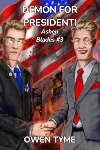

Tymely News
New Release: Demon for President!
I'm delighted to announce the release of a new book! The third volume of Ashen Blades, Demon for President! is now available as an Ebook!

The Hunter's demonic arch-nemesis, Vogerath, returns to Earth once more, but this time, he's running for President of the United States, on the 2024 ballot! Worse yet, the demon’s unique power to be in multiple places at once allows him to convincingly pretend to be identical twins, running as both a Republican and Democrat!The other candidates all drop out of the race under mysterious circumstances and with his best competition being himself, he's practically assured a win!
Soon, the American people are lapping up the snake-in-a-suit’s every word as if it were ambrosia, calling out his name at every turn, magically charmed to believe he’s the best thing since sliced bread, despite the checkered, criminal history of his “family.”
Hard pressed to get rid of him, the half-demon Hunter and her allies kill him repeatedly, but he pops back up like a bad weed, making all of his appointments on time, photogenically kissing babies, cutting the ribbons of stores and donating laundered blood-money to charitable causes.
Will the hunter manage to end the demon's presidential campaign before election day? If she doesn’t, the USA may just get a Demon for President! Buy this book today and find out for yourself!
There's also a promotional page for this book, which includes links to political pins you can buy.
Tags: ashen-blades, novel, publishing
The Third Wish, in Ebook and Print!

Plagued by horrific nightmares, the consequences of war and reeling from the loss of his family, the Steel Wizard, Levi Jacobs copes by throwing himself into work, but old enemies gain the power to travel through time, refusing to give him a moment to grieve. Making matters worse, an impatient and violent alien pirate lurks in orbit.Far from friendly, the alien pirate is boiling with rage over several massive blows to his pride at the hands of humanoids. Unable to kill those responsible, instead he plots revenge on their child, Levi, and everyone around him, to regain face in the eyes of his own kind, for whom personal pride is literally everything, including social ranking and the right to rule.
While Levi's busy dealing with the pirate, a deposed prince scours history for allies, putting together a frightening misfit team of spies, dangerous trolls and wizards that all have a grudge to settle with Levi and his family. Intent on changing history to suit themselves, they strike at the foundations of the present, threatening to kill Levi's father at a pivotal moment on which the history of the galaxy hangs.
Will Levi solve this mess and move forward with his life or will he buckle under the responsibility of protecting both what he has and what he's lost?
I'm very pleased to announce that book three of The Wizard's Scion, The Third Wish is now available for 3.99 in Ebook or 18.99 in paperback (US dollars).
I hope you'll enjoy it as much as I did!

Tags: ashen-blades, novel, publishing
She Goes to War, Now in Print!
The second volume of the Ashen Blades series, titled She Goes to War, is available in print! In addition, She Goes to Summer Camp, the short story included in She Goes to War, is available both as a free Ebook and in print.
If you want to own both, buy the novel. If you want to get a free taste of the Ashen Blades series, claim your free copy of She Goes to Summer Camp today!
She Goes to War

The Hunter never wanted to go to war, but in 1972, she senses the return of her demonic arch-nemesis, Vogerath, to the world. Following his magic like a bloodhound, she finds herself inexplicably drawn to Vietnam, a war zone.With a pressing need to kill Vogerath, who claims to be the serpent from the Garden of Eden, the half-demon Hunter is joined by her detective partner, Clayton Simmons, and a powerful witch, Verda Bagley.
It was meant to be a simple search and destroy mission, but nothing in the jungles of Vietnam is ever simple and their plans go off the rails the moment the Hunter sets foot on the ground. She’s overcome by the magic of the jungle, which causes her to forget her humanity and transform into a great, black cat with blue eyes!
Her team are forced to subdue her, to bring her back to her senses, but the consequences of her instinct-driven actions leave them troubled, because she killed a demon disguised as an American soldier and his best friend wants revenge! As this fresh, unwanted conflict comes to a close, the Hunter’s hands are reluctantly stained with human blood.
Vogerath’s jungle hideout is surrounded by soldiers and the raid begins, but the Hunter’s plan continues to go wrong. After a unit of tanks is overrun, the US military throws everything they’ve got at the demons, inadvertently playing into Vogerath’s hands! The demon grows stronger with each attack and awaits the power of a nuclear strike, planning to use it to open a portal to Hell, so endless legions of demons can march forth to conquer the Earth!
Will the Hunter and her friends stop Vogerath in time or will the world be conquered by demons? Buy this book today and find out!
Includes a bonus novella: She Goes to Summer Camp, in which the Hunter faces the most unthinkable and horrifying of challenges: teenagers.
She Goes to Summer Camp

Camp Sapphire Friendship, a summer camp for teens, was the last place the Hunter wanted to go, but she'd made a vow to protect humanity from demons, no matter where they appeared and in 1986, her team of demon-slaying experts is called on to investigate. However, to make things even worse, the Hunter's team leader sends her into the camp as an undercover operative, under the guise of a regular teen, despite the fact that the half-demon girl being old enough to be the grandmother of the kids at camp.She's soon caught up in the daily minutiae of camp, learning a few new things along the way, while followed around like a puppy by a new "friend", a motor-mouthed girl that never shuts up. On the very first day, she also acquires a trio of teenage foes in the form of some valley-girl sisters from Los Angeles, who take every opportunity to insult and plays pranks on her.
However, despite the innocent look of the place, danger lurks around every corner, because the owner of the camp, Miss Macie Weber, is an untrained witch, whose unknowing, haywire magic threatens to kill everyone by summoning powerful and vengeful nature spirits, on top of the demons already lurking among the humans at camp!
Will the Hunter find and slay the the demons or will the nature spirits take offense at her mere presence, because she's had the Jungle Spirit stuck inside her head since 1972?
Download today and find out!
Tags: ashen-blades, novel, publishing
She Goes to War, Coming April 5th!
The second volume of the Ashen Blades series, titled She Goes to War, is now available for pre-order as an Ebook. The print edition still has a few details to work out, but should be available soon.
She Goes to War will be available on April 5th, 2024!
This one is special to me, because a friend of mine that fought in Vietnam talked me into writing it and then served as my primary source of information on the jungles of Vietnam. According to him, I hit the nail on the head and the details of the setting are as close to perfect as they can be.
I hope you'll enjoy it!
Due to how serious and emotionally difficult this novel was to write, I decided to pair it with a rather humorous bonus novella, She Goes to Summer Camp, in which our stalwart heroine goes undercover at a summer camp where teens have gone missing four years in a row, in search of the demon responsible, but nothing could have prepared her for the horrors of dealing with teenagers.
When final arrangements for art are complete, She Goes to Summer Camp will also be released as a short story as part of my Short of Tyme collection.
The Hunter never wanted to go to war, but in 1972, she senses the return of her demonic arch-nemesis, Vogerath, to the world. Following his magic like a bloodhound, she finds herself inexplicably drawn to Vietnam, a war zone.With a pressing need to kill Vogerath, who claims to be the serpent from the Garden of Eden, the half-demon Hunter is joined by her detective partner, Clayton Simmons, and a powerful witch, Verda Bagley.
It was meant to be a simple search and destroy mission, but nothing in the jungles of Vietnam is ever simple and their plans go off the rails the moment the Hunter sets foot on the ground. She’s overcome by the magic of the jungle, which causes her to forget her humanity and transform into a great, black cat with blue eyes!
Her team are forced to subdue her, to bring her back to her senses, but the consequences of her instinct-driven actions leave them troubled, because she killed a demon disguised as an American soldier and his best friend wants revenge! As this fresh, unwanted conflict comes to a close, the Hunter’s hands are reluctantly stained with human blood.
Vogerath’s jungle hideout is surrounded by soldiers and the raid begins, but the Hunter’s plan continues to go wrong. After a unit of tanks is overrun, the US military throws everything they’ve got at the demons, inadvertently playing into Vogerath’s hands! The demon grows stronger with each attack and awaits the power of a nuclear strike, planning to use it to open a portal to Hell, so endless legions of demons can march forth to conquer the Earth!
Will the Hunter and her friends stop Vogerath in time or will the world be conquered by demons? Buy this book today and find out!
Includes a bonus novella: She Goes to Summer Camp, in which the Hunter faces the most unthinkable and horrifying of challenges: teenagers.
Tags: ashen-blades, novel, publishing
Fresh Release: She Hunts Demons
She Hunts Demons is the first volume of a new series titled Ashen Blades. It's heavy with action, magic, demons, witches, gunplay, conspiracies, a demon's plot to rule the world and an extra helping of wild and woolly weirdness, all in a Film-Noir inspired setting.
I enjoyed writing the dialog, which uses 1940's idioms. I also played around with many Film-Noir tropes, which is why I wanted a mostly black and white cover.
It was a challenging piece to write, but it was also immensely fun, because the protagonist is functionally mute, speaking largely though actions rather than words. She's also the most cocky character I've ever written, so it's probably a good thing she couldn't voice her absurdly stubborn level of self-confidence, which sometimes borders on the insane.
I apologize to those that were anticipating the next volume of The Wizard's Scion, but the third book of this new series, Demon for President! (which I'm in the middle of writing), takes place on the backdrop of the current presidential election, so I'm pressed for time and working to get this new series established so I can publish that piece in a timely fashion, probably in April.
The next book published should be Ashen Blades volume 2, She Goes to War.
You can rest assured: The Wizard's Scion will be published in its entirety, but for now it must wait on the back burner. Again, I'm sorry, but please take a look at She Hunts Demons. I doubt you'll be disappointed.
The half-demon girl who calls herself the Hunter never really considered why she wanted all demons dead, but when she’s presented with the one responsible for killing her parents, she loses all rationality, going on the warpath.
It started with a crying widow and a stack of letters, leading the Hunter’s private detective partner, Clayton Simmons, to investigate a series of financial crimes. These threads all lead to the mysterious Otto Vogerath, who’s rumored to be a mobster.
At the same time, the Hunter’s earliest memories begin coming into focus, giving her clarity about the death of her parents at the hands of the very same, because Vogerath isn’t just a mobster: he’s also a demon that claims to be the serpent from the Garden of Eden.
The duo and their allies are soon caught in a complex spider’s web of mystery, involving conspiracies, murders, atom bombs and the demon’s plot to tear a massive hole in reality, all of which revolves around the life of the Hunter. Worse still, the demon requires the Hunter’s cooperation for his plans to succeed and will do almost anything to get it, repeatedly proving to her that everyone she cares for is in danger, so long as she stands in the way of what he wants.
Will Simmons and the Hunter save the world or will the serpent succeed in opening a portal to Hell, so legions of demons can march forth to conquer the world? The answers lay within this book, but only for those brave enough to buy it!

Tags: ashen-blades, novel, writing, publishing
Author Copies of Forgotten Legends
Today I got my hands on the author copies of Forgotten Legends I ordered.
Just like Troll Song, it's a joy to see something I wrote in print and again, the camera in my phone just doesn't do the art justice.
Oh, and by the way, the Ebook sale is over at the end of today, so if you want to grab a copy of one of my books at a discount, you better move fast!

Tags: writing, publishing, novel, sale
Available for Pre-Order: Forgotten Legends!
The second volume of The Wizard's Scion series, titled Forgotten Legends, is now available for pre-order as an Ebook. The print edition should follow, soon.
Forgotten Legends releases on November 13, 2023.

Levi hated the monster from under the bed as a child, but when he meets the creature as a young adult, he quickly learns nothing will be the same in his life, ever again. The creature of darkness pleads for his aid in a coming war and the young wizard reluctantly agrees, making it his familiar.
Levi’s family and friends are soon caught up in a galaxy-wide war to decide the fate of humanity and continually come face to face with monsters straight out of myth and legend, including the dreaded Four Horsemen of the Apocalypse! The old gods and monsters humanity revered before the rise of science and reason are angry over being ignored and seek to force humanity to believe in them once more!
The young wizard’s allies find themselves in a unique position to fight the supernatural creatures, since they’re gifted with magical powers of their own, soon sparking a wave of resistance from the governments of the galaxy, as they take the fight to the legends!
However, the battle isn’t easy, because the forgotten legends weren’t idle over the millennia, having built an impressive manufacturing facility that draws matter straight from a star to build warships at an incredible rate, churning them out faster than humanity can deal with! Worse yet, these ships have the very best in weaponry that both magic and science can produce.
Will Levi and his family overcome the endless waves of disposable warships or will the governments of the galaxy be crushed by the Four Horsemen of the Apocalypse, beginning an era of slavery under the heel of their own forgotten legends? The answers lay within this book, but you’ll never know unless you buy it!
Tags: the-wizards-scion, novel, writing, publishing
Troll Song is Released!
The first novel in The Wizard's Scion series, titled Troll Song, is available for purchase in both eBook and paperback forms. You can find out more by clicking this link or by clicking on the image, below.

Lyra never intended to cause the extinction of the troll race, but when she uses the power of troll song to read the mind of a dwarf, she’s forced to compare her life of abuse to that of a loving family.
Acting for the good of the world, Lyra betrays her family and kills her oldest sister, creating an opportunity for the dwarves to defeat the troll army.
The middle sister, Lyra’s childhood nemesis, Nicole, is furious beyond all rationality and determined to make Lyra pay, no matter the cost! Death would be too good for Lyra, so Nicole seeks to telepathically destroy her mind, instead!
Luring her sister into a trap, Lyra drops an entire mountain of ice on their heads, intent on ending Nicole at the expense of her own life! Waking after thousands of years frozen sleep in a world of wonders both scientific and magical, Nicole steals a powerful star ship and the contest begins anew!
Will Lyra defeat her murderous sister and end the troll threat or will Nicole destroy Lyra’s mind to fulfill her vow of vengeance, followed by raiding and pillaging as she sees fit? Buy this book and find out, today!
Tags: the-wizards-scion, novel, publishing